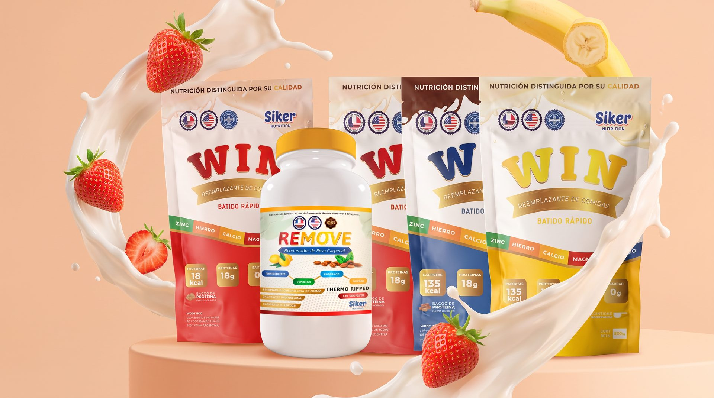
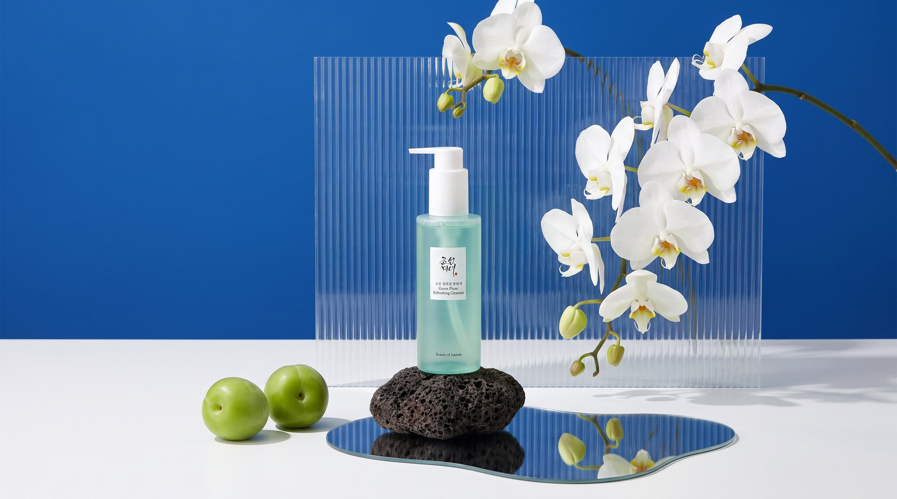

Siker Nutrition
Bold and energetic brand identity for a sports nutrition company targeting active, performance-driven individuals.
Siker Nutrition needed a brand that could stand out in the intensely competitive sports nutrition market. The identity had to communicate power, scientific credibility and modern lifestyle appeal simultaneously.

- Client
- Siker
- Service
- Branding
- Year
- 2021
Fuel your performance
The result is a high-contrast, bold visual system with a custom wordmark, dynamic motion graphics and packaging that commands attention on shelf and screen alike.
Tools used
- + Adobe Illustrator
- + Photoshop
- + After Effects


Creative process
- 1. Market Research. Analysis of the sports nutrition category, target athlete profiles and shelf positioning strategy.
- 2. Identity & Motion. Wordmark design, visual system and motion graphics that bring the brand to life across digital channels.
- 3. Packaging Design. Product line packaging for multiple supplements with strong shelf presence and consistent brand language.


Next project
Beauty of Joseon Green Plum
